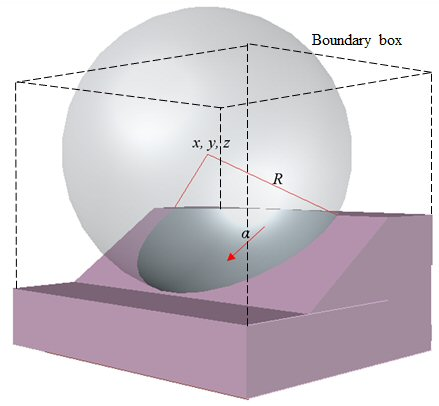

Reliability assessment of 3D slope stability
Ye Win TUNOutline
3D Limit Equilibrium Method
Ellipsoid failure surface is created by imaginary sphere.
Digital Elevation Model (DEM) is used which is made of many columns.
Imaginary sphere is generated within Boundary box.
Bishop Method General Equation:
\[FOS = \frac{\sum R_{i,j}\left[c_{i,j}A_{i,j}+\left[\left\{\frac{W_{i,j}-\frac{c_{i,j}A_{i,j}sinα_{i,j}}{FOS}+\frac{u_{i,j}A_{i,j}tanφ_{i,j}sinα_{i,j}}{FOS}}{cosε_{i,j}+\frac{tanφ_{i,j}sinα_{i,j}}{FOS}}\right\}-u_{i,j}A_{i,j}\right]tanφ_{i,j}\right]}{\sum W_{i,j}[R_{i,j}sinα_{i,j}+k_{eq}e_{i,q}]}\]
Reliability Assessment

Probability of failure
\[P_{f} = P( g(X) ≤ 0 ) = ∫ f(X) dX ≈ 1 - Φ(β) \]
Φ is the cumulative distribution of the standard normal variance
f(X) is the cumulative distribution function
g(X) is the limit state function (failure force = resistance)
FORM Reliability Index (β) (Hasofer-Lind)
\[β = √ (Y^{T}CY) \]
Y is the vector of calculated random variable X whereas C is the correlation matrix
Goal: Find the critical set of a failure surface (x, y, z, R and α) with critical material parameters X(P) which give minimum reliability index β
Genetic Algorithm
Combination of Darwin's theory of evolution with genetics
The genetic analogy coms from the mixing of numerical values (DNAs) of individuals until the optimal values are found
Procedure
Mount St Helens
Cone test for finding multiple failure surface. (left image)
Digital Elevation Model of Mount St Helens in Washington, USA. (right image)
Proposed Genetic Algorithm detects multiple critical failure surfaces. (Blue colour represents failure surfaces)